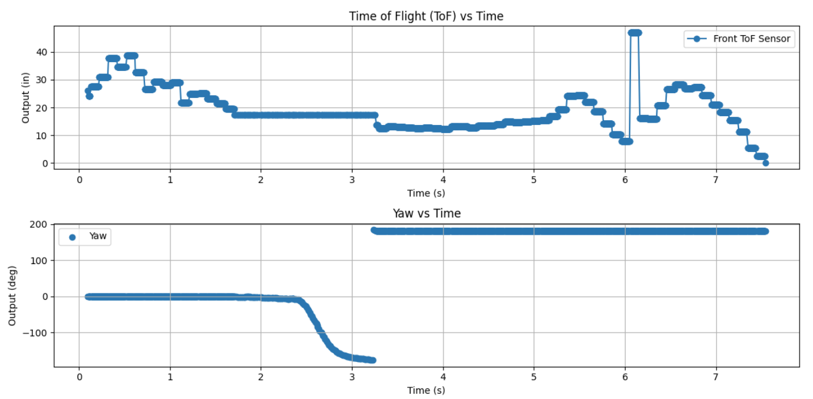
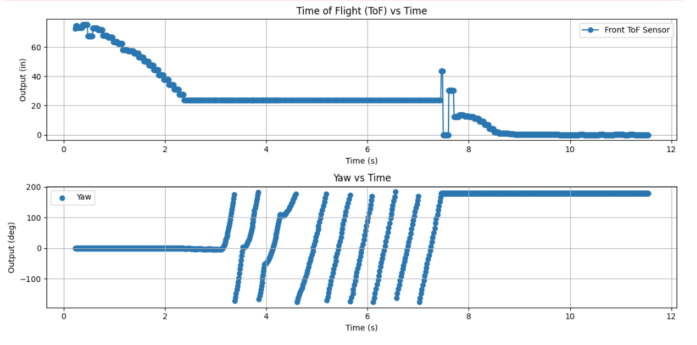

Lab 8: Stunts (Drift)
In this lab I combined previous control strategies to perform a fast drift maneuver.
1. Objective
The goal of this lab was to perform a fast stunt by combining previous lab concepts. I chose Task B (Drift), where the robot drives toward a wall, performs a 180° turn at a set distance, and drives away.
2. Approach and Planning
I initially attempted to use the Kalman Filter from Lab 7, but I found that it was not reliable enough at high speeds for this stunt. Because of this, I chose to rely primarily on tuned ToF distance thresholds and IMU-based orientation control.
I implemented a state machine to manage the transition between driving, drifting, and exiting the maneuver.
3. Drift State Machine
int drift_state = 0;
// 0 = drive toward wall
// 1 = drift (turn)
// 2 = drive away
This structure allowed me to clearly separate control strategies and transition cleanly between phases.
4. Driving Toward the Wall
The robot drives forward at a constant speed until it reaches a threshold distance from the wall.
I initially set this threshold to 12 inches, but I found that the robot continued drifting forward during the turn.
Because of this, I increased the trigger distance to 18 inches to allow enough space for a full drift.
5. Drift (180° Turn)
During the drift phase, I used IMU yaw measurements and a PID controller to rotate the robot by 180°.
One key observation was that large PWM values caused the robot to overshoot significantly. Since the largest rotation (180°) creates the highest rotational velocity, I reduced the PWM values to prevent over-rotation and improve stability.
Additionally, I found that using equal PWM values on both motors did not produce a realistic drift. Instead, I intentionally offset the motor speeds so that one side was stronger than the other, which created a smoother and more controlled turning motion.
6. Driving Away
After completing the turn, the robot drives away from the wall to complete the stunt and clearly show successful reorientation.
7. Results
Below is the video of a successful drift run.
These plots show ToF distance and yaw angle during the drift.

8. Blooper: The Peepee Dance
One of the more interesting failure modes I observed was what I call the “peepee dance,” where the robot would spin in place uncontrollably and then drive off unpredictably (in one case directly toward my bathroom).

9. Discussion
This lab highlighted how difficult it is to control fast dynamic motion. Small changes in distance thresholds or PWM values had a large effect on performance.
While the Kalman Filter worked well in Lab 7, it was not reliable enough at high speeds for this stunt, so direct sensor tuning provided better results.
Overall, this lab brought together all previous concepts and demonstrated how estimation and control interact in real-world robotics systems.
10. Acknowledgments
I used ChatGPT to help debug code and structure this report.
I also used Akinfolami Akin-Alamu's Spring 2025 to help stucture my report as there was not much stucture in the Lab 8 handout.